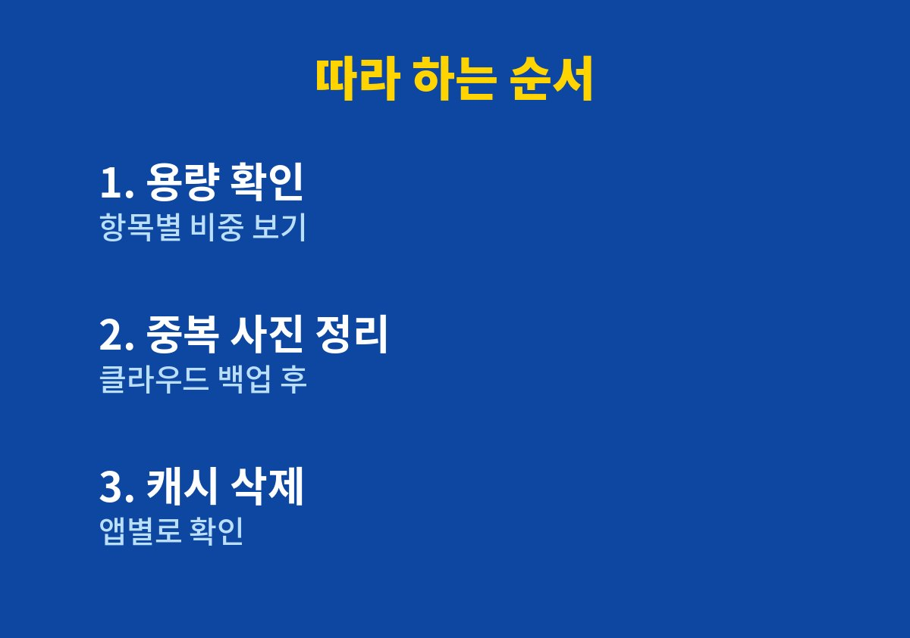

이 글은 사진을 찍으려는 순간 저장공간이 부족하다는 안내가 떠서 당황한 적이 있는 사람을 위해 쓴 글이다.
온라인 쇼핑몰을 운영하며 상품 사진과 아이들 사진을 한 휴대폰에 모두 담아 두던 내가 직접 정리한 순서를 기록했다.
2026년 11월 기준이며 기기와 운영체제 버전에 따라 메뉴 이름은 조금 다를 수 있다.
상품 촬영을 서둘러야 하는 날에 하필 저장공간이 부족하다는 알림이 떴다.
그동안 휴대폰이 느려진 것도 같은 이유였다는 생각이 들었다.
그저 사진이 많아서라고만 짐작했는데 막상 확인해 보니 생각과 달랐다.
그래서 무작정 지우기 전에 항목별 용량부터 확인해 보기로 했다.
설정에서 저장공간 또는 기기 관리 메뉴로 들어가면 사진, 앱, 문서, 기타 항목별 사용량이 나온다.
내 경우 사진과 영상이 가장 컸고, 그다음이 앱과 그 안에 쌓인 임시 파일이었다.
| 항목 | 원인 | 내가 한 정리 |
| 사진과 영상 | 중복과 흔들린 컷 | 백업 후 삭제 |
| 앱 캐시 | 쓰지 않는 임시 파일 | 앱별 캐시 삭제 |
| 받은 파일 | 메신저 자동 저장 | 다운로드 폴더 정리 |
표대로 용량이 큰 곳부터 처리하니 같은 시간에 훨씬 많은 공간을 확보할 수 있었다.
사진은 지우기 전에 클라우드나 컴퓨터에 먼저 옮겨 두었다.
아이들 사진은 다시 찍을 수 없는 자료라서 백업이 끝난 것을 확인한 뒤에만 지웠다.
이 순서를 지키면 실수로 지워도 되돌릴 수 있어 마음이 편하다.
단체 대화방에서 받은 사진과 영상이 자동으로 저장되고 있었다.
자동 저장 설정을 끄자 불필요한 파일이 더 쌓이지 않았다.
정리보다 중요한 것은 다시 쌓이지 않게 하는 설정이었다.
캐시 삭제와 데이터 삭제는 전혀 다른 기능이다.
캐시만 지우면 로그인 정보와 저장된 설정은 그대로 남지만, 데이터까지 지우면 앱이 처음 설치한 상태로 돌아갈 수 있다.
나는 이 차이를 모르고 데이터 삭제를 눌렀다가 앱을 다시 설정하느라 시간을 쓴 적이 있다.
쇼핑몰 운영에 쓰는 상품 사진과 거래 자료는 휴대폰에만 두지 않고 컴퓨터나 클라우드에 이중으로 보관하기로 했다.
휴대폰이 고장 나거나 분실되면 저장공간 정리와 상관없이 자료를 잃을 수 있기 때문이다.
정리를 하는 김에 백업 습관도 함께 만들어 두면 좋다.
저장공간이 늘 모자란다면 클라우드 요금제나 외장 저장장치를 쓰는 방법도 있다.
다만 먼저 불필요한 파일을 줄인 뒤에 필요한 만큼만 용량을 늘리는 것이 비용 면에서도 합리적이라고 생각한다.
한 달에 한 번 저장공간을 점검하겠다고 마음먹어도 바쁘면 잊게 된다.
그래서 캘린더에 매달 첫째 주말 반복 일정으로 적어 두었고, 알림이 뜨면 십 분만 투자해 항목별 용량을 살펴본다.
이렇게 하니 저장공간이 가득 차서 급하게 지우는 일이 없어졌다.

1. 설정의 저장공간 메뉴에서 항목별 사용량을 확인한다.
2. 사진과 영상은 클라우드나 컴퓨터에 백업한 뒤 중복과 흔들린 컷을 지운다.
3. 사용량이 큰 앱의 캐시를 앱별로 삭제한다.
4. 메신저의 사진과 영상 자동 저장 설정을 끈다.
5. 한 달에 한 번 같은 순서로 저장공간을 다시 확인한다.
이렇게 정리하고 나니 여유 공간이 생겼고 휴대폰 반응도 한결 가벼워진 느낌이었다.
모든 기기에서 같은 효과가 나는 것은 아니므로 먼저 어디에 용량이 쓰이는지 확인하는 것이 출발점이다.
저장공간이 가득 차기 전에 한 달에 한 번만 점검해도 급한 순간에 당황할 일이 크게 줄어든다.
휴대폰은 매일 쓰는 업무 도구인 만큼 눈에 보이지 않는 곳까지 가끔 들여다보고 관리하는 습관이 필요하다.
이 글의 순서대로 한 번만 정리해 보면 자신에게 맞는 기준이 자연스럽게 생기고, 다음번에는 훨씬 빠르게 끝낼 수 있다.
※ 2026년 기준 개인 사용 경험과 공식 발표를 바탕으로 정리한 글이며, 기기·앱 버전에 따라 메뉴 이름이 다를 수 있다.